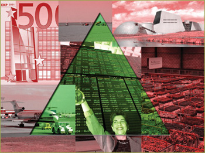

- Multilateral cooperation on economic issues, including successful
WTO negotiations leading to elimination of almost all trade barriers.
- CAP subsidies and cohesion policy are phased out by 2030.
- Societies are predominantly driven by market-based solutions, resulting
in high economic growth rates, particularly for poorer countries.
- A strong technological development.
- The role of the government is limited to core responsibilities, such
as basic education, security, major infrastructure ensuring conditions
for competitive markets, law enforcement.
- Turkey, Romania, Bulgaria as well as some Balkan countries, Ukraine
and some smaller countries have joined the EU. There is a flexible policy
regarding migration.
- Maintenance (and extension) of nature is not seen as a priority for
the government and is mainly depending on private initiatives.
|
 |